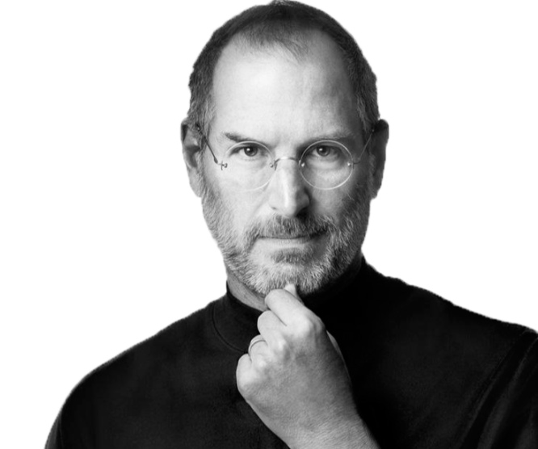

A Revolutionary Genius, Inventor and Entrepreneur
Steven Paul "Steve Jobs was an American information technology entrepreneur and inventor. He was the cofounder, chairman, and CEO of Apple Inc, CEO and largest shareholder of Pixar Animation Studios; and founder, chairman, and CEO of NeXT Inc. Jobs is widely recognized as a pioneer of the microcomputer revolution of the 1970s, along with Apple co-founder Steve Wozniak.
Born San Francisco Steve Jobs was born on 24th of February 1955 in San Francisco, Californië. Steve was best known for co-founding Apple Inc together with Steve Wozniak and Ronald Wayne
In December 1973, Steve Jobs attend but later drops out of Reed College. He starts to travel through India until 1974. During his time in India, Steve Jobs becomes more interested in Buddhism.
After coming back from Traveling through India. Steve Jobs starts working on Apple I Computer together with Steve Woz. Steve Wozniak attended the first meeting of the Homebrew Computer Club in Gordon French's garage on March 5, 1975. He was so moved that he began work on what would become the Apple I computer right away. After creating one for himself and demonstrating it to the club, he and Steve Jobs distributed schematics (technical designs) for the computer to interested club members, as well as assisting some of them in building and testing prototypes. Then Steve Jobs proposed that they develop and sell a single etched and silkscreened circuit board just the bare board, no electronic components that customers could use to make computers. Wozniak predicted that laying out the board design would cost $1,000, with production costing a further $20 per board. The start of selling their first computer was set into motion.
On the 1st of April in 1976, Apple was founded.
The Apple Inc went on sale in July 1976 for $666.66 because Wozniak "loved repeating numbers" and because the wholesale price of $500 increased by a third. The first units produced were used in high school math classes and donated to Liza Loop's Public Access Computer Center. About 200 were produced and all but 25 were sold within 9 or 10 months.
Macintosh is launched at Apple's annual shareholder meeting.
Job's left Apple and started a new computer firm NeXT.
Steve Jobs buys Pixar Animation Studios.
Steve Jobs marries Laurene Powel.
Toy Story work is haulted and becomes NeXT Software Inc.
On 20 december 1996 Apple Inc announces the acquisition of NeXT
Steve Jobs is back as CEO at Apple Inc.
First iPod is introduced and Apple opens retail stores.
Steve Jobs gives commencement speech at Stanford University. In the same year Steve Jobs unveils iWork, the Mac mini, iPod shuffle and Mac OS X 10.4.
Introduction iPhone, Apple TV and iPod Touch. Apple Computers becomes Apple Inc.
Jobs takes medical leave for six months and has surgery for liver transplant.
Jobs introduces iPad, iPhone 4 and iPod Touch 4G and new Macbook Air.
Steve Jobs resigned his position as CEO of Apple.
On 5th of October 2011 Steve Jobs passes away.